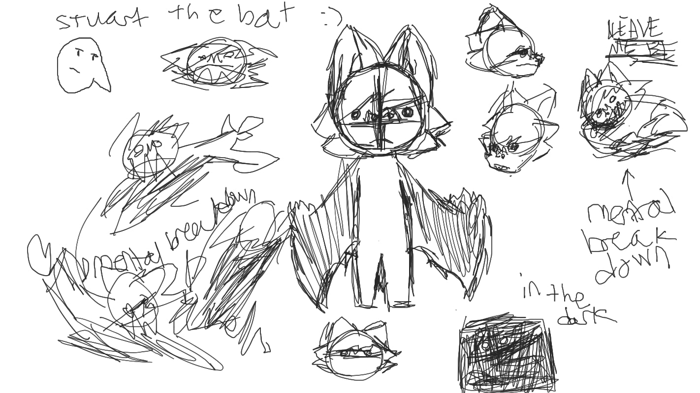

(Click on the image to enlarge it.)
Rough sketches of Stuart in Jamboard, which explains why he looks quite wonky in the front.
He looks a bit emo, don't you think?
<< First
|
< Back
|
Forward >
|
Latest >>